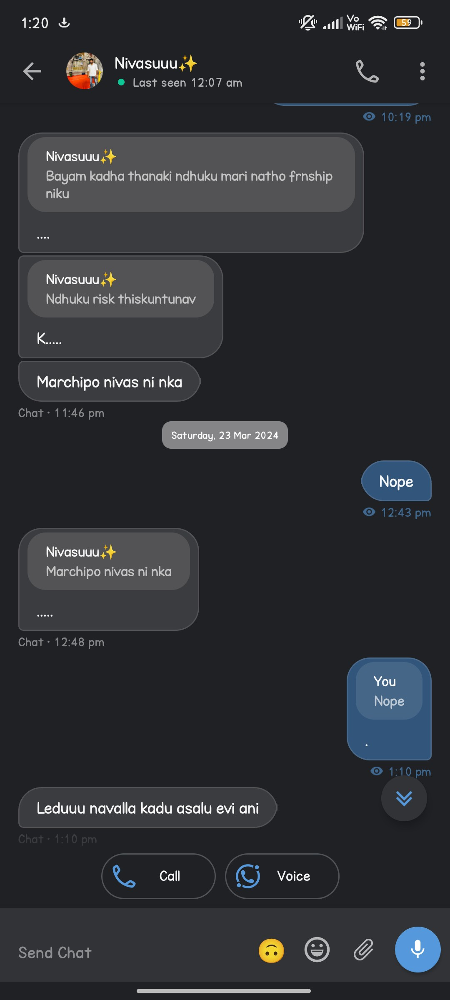
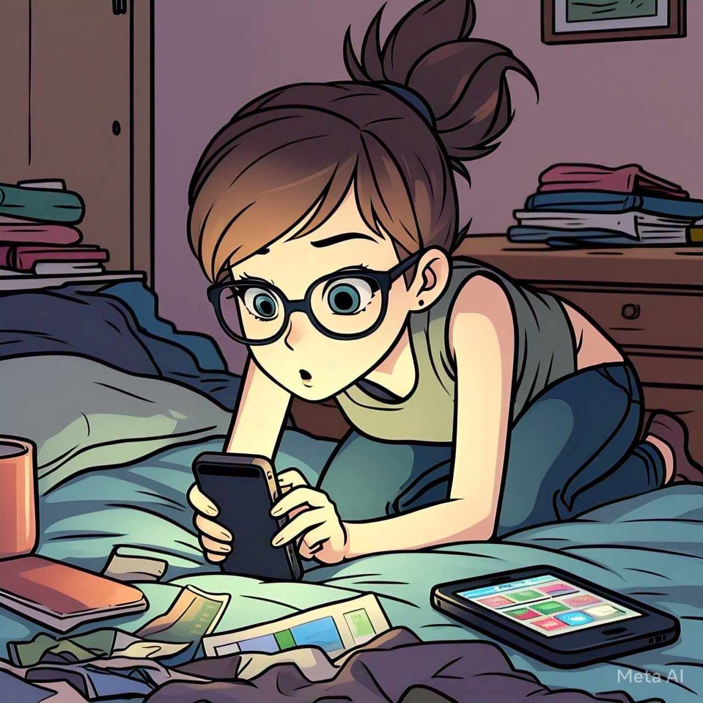
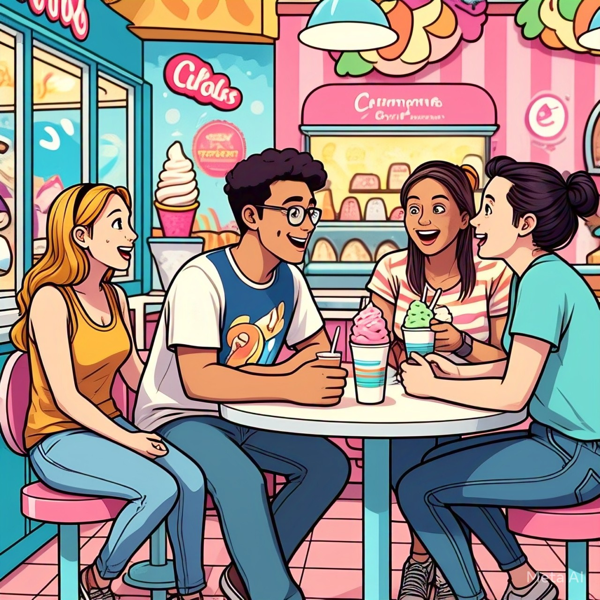

Rendova bhagam - dwesham Manchi unna chota chedu unattu, anandam unna chota badhalu kuda untay, face cheyali, adhee life. Manasa ki jeevitham lo unna vere vyakthi valla vellla madya dooram perigindi. Block cheyadam, godava padatam, matladatam maneyadam. Chuttuu situation okati chepthundi, manasu okati chepthundi anattu. Enni sarlu block chesina malli manasa edoka time lo unblock chesi conversation start chesedi. Alaa start chesina prathee saari nivas oddu ani cheppevadu. Marchipo ani cheppevad. Kaani mondi vedavalu vinanu anattu, nooo antuu undedhi manasa.
Job manesad, veredi choodali andukossm resume preparation start ayindi. Veeella lives lo resume ki kuda manchi role undi ani chepoch. Nivas ki prepare chesedi manasa. Nivas tho patu modhati bhagam lo matladukuna nivas ki istamaina ammayi ki kuda resume prepare cheyadam try chesindi nivas adigad ani. Apudu manasa roomates manasa ni buddi ledhu neku, nivas ki chesthunav ok, aa ammayiki kuda chesesthunav asalu oka board Pettu poni ani, crush gf ki help chesthunna ammayivi nuvve emo ani anevar. Alaa chalaa conversations jarigevi. Kani papam nivas ki ivem teliyavu. Vanda prashnalaki samaadhanam chinna cirunavvu anattu, Vallennnii anna chinni navvutho saripettesedi. Kani ikkada vichithram entante epudu ekkada elaa manasa ki nivas meeda istam modalaimdo telidu. Thanatho matladanapudu thana frnd tho enduku matladali ani alagadam manasa, kaani papam pichidi bujjaginchadaniki, daani kopam chepukodaniki evar ler aaa topic kosam. Inkem cheyaleka epudaina nivas thana roommate keerthana ki call chesthe kopam tho moothi muduchukunedi. Keerthana ki teliyakunda thana phone lo nivas kosam vethikedi, thanem chesthunad, elaaa untunad, ivanniii choosi emi eraganattu silent ga undedhi.
Devatha ki ina sare, jealous untundi, aaa vishayam lo evaraina okate. Alantidi nivas oka roju thanaki istamaina ammayi pakkana koorchuni manasa ki edurugaaa undi table meeda neekevar antee istam chepu chepu story ani gucchi gucchi adigithe okaroju, em chepalo teliyaka thana kallani verri chopultho choosindi ice cream parlour lo.
Kaalam vellaga vellaagaaa, nivas bday raane vachindi. Andarilaa close ga Happy birthday ani eduruga velli cheppaleni situation, edaina manchi gift koni chethilo pettaleni situation. Anduke konchem ekkuva aalochinchi thana peruna food donate chesindi manasa. Nivas aithe konchem shock ayyadu, may be e gift expect cheyaled Anukunta thanu or manasa nundi gift expect cheyaledo ipati daka clarity ledu. Aadavaallaki asuya padatam alavatu ithe, magavallaki asuya pettadam alavatu. All of a sudden conversation madyalo apude kottukuni kalisina nivas manasa ni aa ammayi bday kosam ani elaa wish cheyali ani oka pragarah raasi, manasa chetha corrections chepinchi, em teesukellali, elaw teesukellaali, edi konaali ilaaa matladad chalaa mrng mrng eee. Inni questions Thanu intentional ga adigado, unintentional ga adigado nivas eee chepali mari. Ilaa saaguthu konni rojulaki dwesham ki mugimpu vachindi..